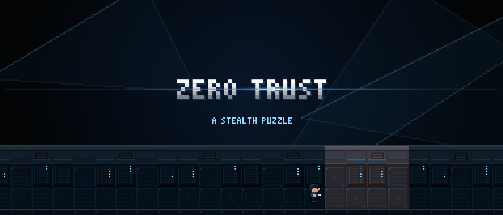
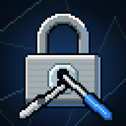

Um quebra-cabeça sobre teste de intrusão física. Empresas contratam você para invadir os próprios prédios, chegar ao servidor e sair sem ser visto.
A página na App Store abre quando começar a pré-venda.
Confiança Zero é um quebra-cabeça sobre um trabalho que pouca gente sabe que existe: o teste de intrusão física. Empresas contratam você para invadir os próprios prédios, chegar ao servidor e sair sem ser visto, para descobrir como um invasor de verdade faria.
Cada um dos 56 trabalhos é um prédio, ou um complexo cercado inteiro, visto de cima, em pixel art. As salas ficam no escuro até você entrar, então cada trabalho é lido uma porta de cada vez: vigias fazem a ronda, câmeras varrem o ambiente, sensores de presença chamam os vigias, e é a recepção que decide quem entra.
Você abre fechaduras num jogo de tempo, convence a recepção escolhendo quem você é e o nome de quem citar, e lê bilhetes e telas destravadas atrás de senhas e horários. Todo trabalho esconde achados extras, do tipo que um testador de verdade põe no relatório, e eles rendem as estrelas que compram equipamento.
Os trabalhos crescem com o cliente: pequenos negócios, empresas médias, grandes corporações, infraestrutura crítica como usinas, conglomerados globais e, por fim, complexos de vários prédios com ronda do lado de fora. O primeiro trabalho ensina enquanto você joga, na voz seca do próprio testador.
28 segundos, tudo jogo de verdade, de oito trabalhos, com os sons do próprio jogo.
Baixar o trailer (MP4, 886 × 1920)
iPhone, 1290 × 2796. Clique para ver a imagem inteira.

Confiança Zero é feito por uma pessoa só, Ulisses Alves, e é seu primeiro jogo.
Dúvidas, versões para análise e entrevistas: odisseualves@gmail.com